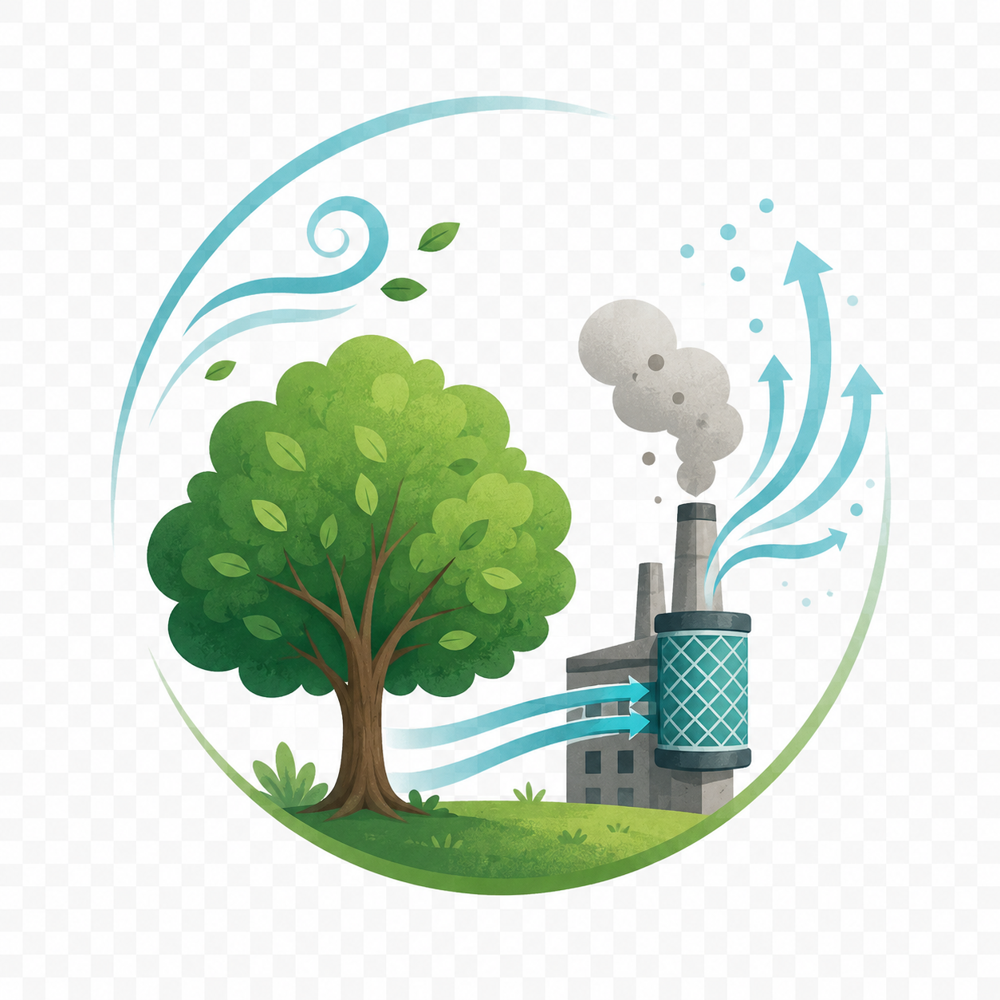
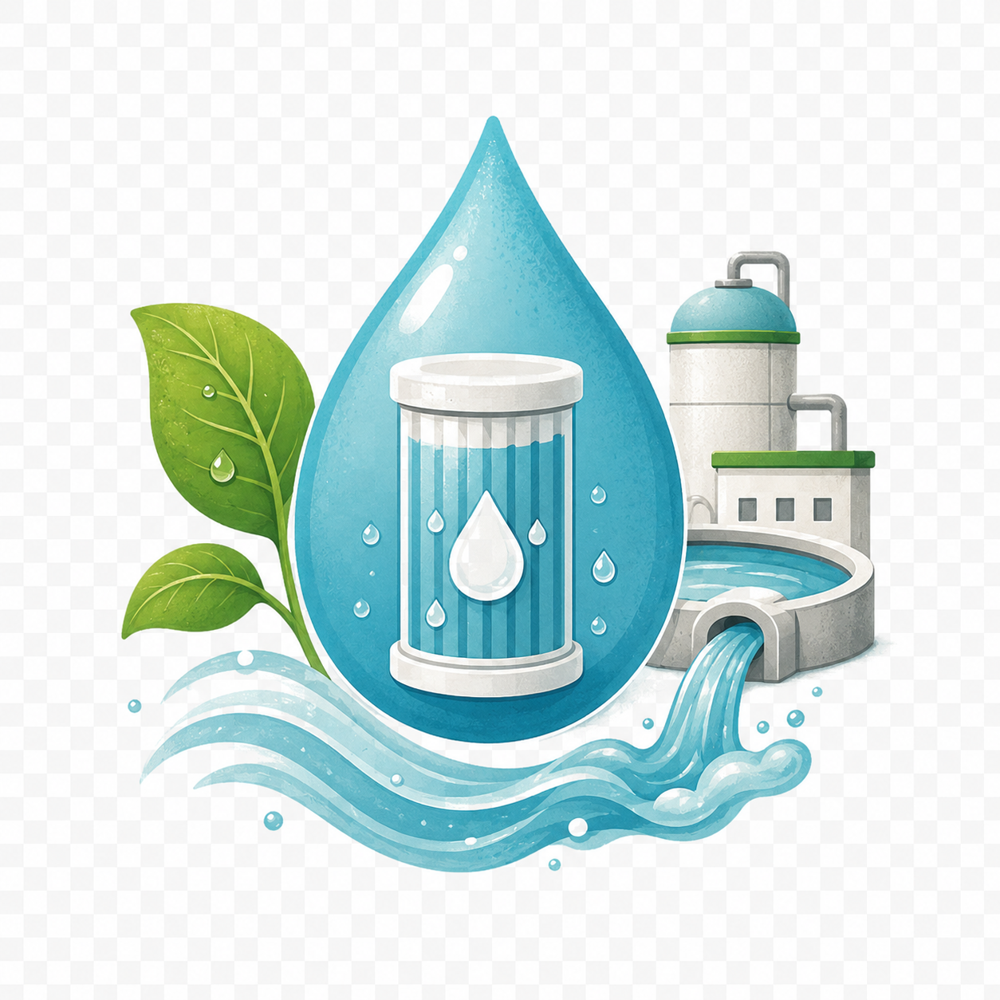
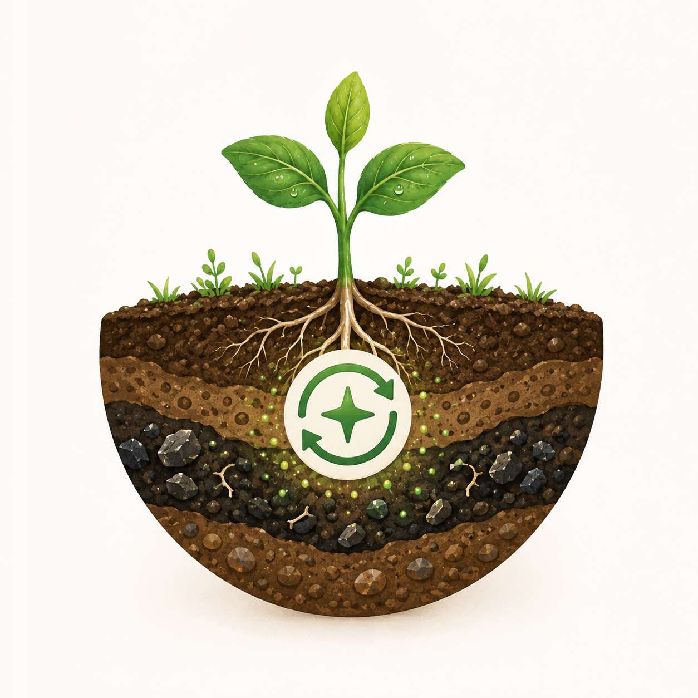

小葵体检状态
叶片：受损
根系：异常
光合：下降
当前展区：污染源治理
空气治理措施

减少废气排放
工厂安装废气处理设备，减少工业废气直接排放到大气中。
增加绿化带
城市绿化可以吸附空气中的颗粒物，吸收部分有害气体，改善空气质量。
推广清洁能源
使用太阳能、风能等清洁能源，减少燃煤和化石燃料的使用。
水体治理措施

污水处理
工业和生活污水必须经过处理达标后才能排放，减少水体污染。
减少化肥流失
合理使用化肥，采用精准施肥技术，减少农业面源污染。
河道修复
清理河道淤泥，恢复水生生态系统，增强水体自净能力。
土壤治理措施

减少农药化肥
推广有机农业，使用生物防治方法，减少化学物质对土壤的伤害。
隔离污染源
对污染场地进行隔离，防止污染物进一步扩散到周围土壤。
修复污染土壤
采用物理、化学或生物方法修复污染土壤，恢复土壤生态功能。